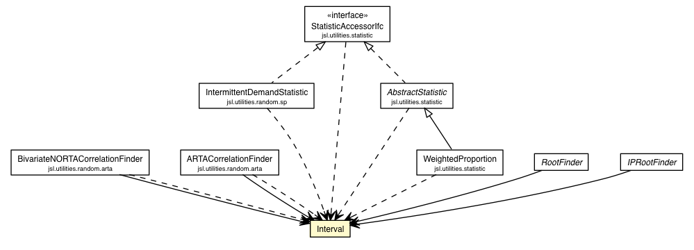

jsl.utilities.rootfinding
Class Interval

java.lang.Object
 jsl.utilities.rootfinding.Interval
jsl.utilities.rootfinding.Interval
public class Interval
- extends Object
|
Constructor Summary |
Interval(double xLower,
double xUpper)
|
myLower
protected double myLower
myUpper
protected double myUpper
Interval
public Interval(double xLower,
double xUpper)
- Parameters:
xLower - xUpper -
setInterval
public final void setInterval(double xLower,
double xUpper)
- Sets the interval
Throws IllegalArgumentExceptons if the lower limit is >= upper limit
- Parameters:
xLower - xUpper -
toString
public String toString()
- Overrides:
toString in class Object
getLowerLimit
public final double getLowerLimit()
getUpperLimit
public final double getUpperLimit()
contains
public final boolean contains(double x)
Copyright © 2012 Manuel D. Rossetti. All Rights Reserved.